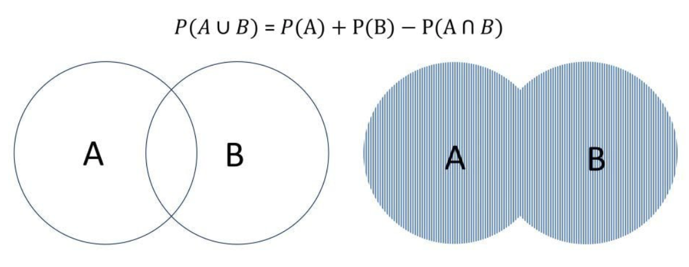

Capítulo 7 Medidas de importancia clínica.
En este capítulo se resolverán problemas relativos a:
- Diferencias entre Proporción, Tasa, Razón, odds.
- Medidas de asociación en tablas 2x2. Riesgo Relativo. Riesgo Absolutos. Odds-Ratio.
- Indicadores estadísticos básicos para evaluar el desempeño de un procedimiento diagnóstico: Sensibilidad y Especificidad. Probabilidades pre y post prueba.
7.1 Pregunta test
¿Cómo se denomina la medida de epidemiología que indica la probabilidad de que una enfermedad se desarrolle en un grupo de individuos expuesto a un factor de riesgo comparada con la del grupo no expuesto?
- Incidencia acumulada
- Densidad de incidencia
- Fracción atribuible
- Prevalencia
- Riesgo relativo
7.2 Pregunta test
En un estudio de casos y controles si se constata asociación estadística mediante la chi- cuadrado clásica ¿Cómo mediremos la magnitud de la asociación?
- Riesgo relativo
- Riesgo atribuible
- Fracción de riesgo atribuible
- Odds ratio
- Densidad de incidencia
7.3 Pregunta test
A la capacidad de una prueba diagnóstica para identificar correctamente a los que no padecen la enfermedad se le denomina:
- Sensibilidad
- Especificidad
- Valor predictivo positivo
- Valor predictivo negativo
- Razón de probabilidad
7.4 Problema
Si una prueba diagnóstica tiene una sensibilidad del 75% y una especificidad del 85%, calcule la razón de probabilidad positiva.
7.4.1 Solución
La razón de probabilidad positiva, también conocido como cociente de probabilidad positivo (CPP) o likelihood ratio (LR), nos indica cuánto más probable es tener un positivo en la prueba en un enfermo que en un sano. El uso del LR constituye una herramienta de gran utilidad para la toma de decisiones clínicas frente a la solicitud de algún test diagnóstico, porque son valores inherentes a éste e independientes de la prevalencia de la enfermedad.
Matemáticamente, sería el resultado del cociente:
\(\frac{positivos ~ en ~ enfermos}{positivos ~ en ~ sanos}\)
Sabemos que:
- la proporción de positivos en los enfermos es la Sensibilidad
- la proporción de los positivos en sanos son los Falsos Positivos que serían aquellos sanos que no dan negativo o, lo que es lo mismo, \(1 -\) Especificidad.
Entonces, en nuestro problema:
\(CPP= \frac{S}{1-E}= \frac{0.75}{1-0.85}=\frac{0.75}{0.15}=5\)
Así, la razón de probabilidad positiva es 5 lo que indica que en esta prueba diagnóstica, un enfermo tiene 5 veces más posibilidades de dar positivo que un sano.
7.5 Pregunta test
La proporción de enfermos que han dado un resultado negativo en la prueba diagnóstica dividido entre la proporción de sanos que también han dado negativo en dicha prueba se denomina:
- Razón de probabilidad positiva
- Valor predictivo negativo
- Valor predictivo positivo
- Razón de probabilidad negativa
- Especificidad
7.6 Pregunta test
Si al aplicar una prueba diagnóstica se observa un 10% de falsos positivos cuál de las siguientes afirmaciones es cierta:
- La sensibilidad es el 90%
- La especificidad es el 90%
- El valor predictivo positivo es el 90%
- El cociente de probabilidad positivo es del 90%
- La sensibilidad es el 10%
7.7 Problema
Si la probabilidad de tener la enfermedad \(A\) es del 5%, la de tener la enfermedad \(B\) es del 10% y la de tener al menos una de las dos es del 13%, ¿cúal es la probabilidad de tener las dos?
7.7.1 Solución
Éste es un típico problema de Probabilidad con sucesos de Bachillerato que se resuelve muy fácilmente recordando la opraciones con sucesos y los Diagramas de Venn:
- \(A\) = tener la enfermedad \(A\) \(P(A)=0.05\)
- \(B\) = tener la enfermedad \(B\) \(P(B)=0.10\)
- \(A \cap B\) = tener las dos enfermedades
- \(A \cup B\) = tener, al menos, una de las dos enfermedades \(P(A \cup B) = 0.13\)
Con un diagrama de Venn:

Así, \(P(A \cup B)=P(A)+P(B)-P(A \cap B) \Rightarrow 0.13=0.05 + 0.10 - P(A \cap B)\)
de donde
\(P(A \cap B)=0.02\)
Entonces, la probabilidad de tener las dos enfermedades es del 2%.
7.8 Pregunta test
En una prueba diagnóstica es importante determinar:
- La sensibilidad
- La especificidad
- El valor predictivo positivo
- Todas son ciertas
7.9 Pregunta test
Si una prueba diagnóstica se aplica a un grupo de población en el que la prevalencia de la enfermedad es superior a la de la población general aumentará su:
- Sensibilidad
- Especificidad
- Valor predictivo positivo
- Razón de probabilidad positivo
- Sensibilidad y especificidad
7.10 Problema
Si una prueba diagnóstica que tiene una sensibilidad del 90% y una especificidad también del 90% se aplica a una población de 200 individuos con una prevalencia de enfermedad del 50% ¿Cuál será el valor predictivo positivo?
7.10.1 Solución
Tenemos que recordar que
\(VPP=\frac{Verdaderos ~ positivos}{Total ~ positivos}=\frac{Verdaderos ~ positivos}{Verdaderos ~ positivos ~ + ~ Falsos ~ positivos}\)
Vamos a hacer una tabla con los datos del problema. Sabemos que:
| Enfermo | Sano | ||
|---|---|---|---|
| Positivo (+) | |||
| Negativo (-) | |||
| 100 | 100 | 200 |
ya que se aplica a una población de 200 individuos con una prevalencia de enfermedad del 50% . Ahora:
- la Sensibilidad es la proporción de enfermos que son diagnosticados como positivos (proporción de verdaderos positivos) por lo que:
\(0.90 = \hat{P}(+/E) = \frac{verdaderos ~ positivos}{100}\) de donde el numero de verdaderos positivos es 90.
- la Especificidad es la proporción de sanos diagnosticados como negativos (proporción de verdaderos negativos) por lo que:
\(0.90 = \hat{P}(-/S) = \frac{verdaderos ~ negativos}{100}\) de donde el numero de verdaderos negativos es 90.
En la tabla:
| Enfermo | Sano | ||
|---|---|---|---|
| Positivo (+) | 90 | ||
| Negativo (-) | 90 | ||
| 100 | 100 | 200 |
Terminando de cumplimentar los datos que faltan, tenemos:
| Enfermo | Sano | ||
|---|---|---|---|
| Positivo (+) | 90 | 10 | 100 |
| Negativo (-) | 10 | 90 | 100 |
| 100 | 100 | 200 |
Nos piden el VPP:
\(VPP=\frac{Verdaderos ~ positivos}{Total ~ positivos})\frac{90}{100}=0.90\)
por lo que el VPP de la prueba es del 90%.
7.11 Pregunta test
Cierto tests diagnóstico acierta sobre el 100% de los individuos enfermos y el 50% de los sanos. Cierta persona pasa el test con resultado negativo. Entonces:
- Esta sana.
- Esta enferma.
- Existe una probabilidad del 50% de que esté sana.
- Existe una probabilidad del 75% de que esté sana.
- Existe una probabilidad del 75% de que esté enferma.
7.12 Pregunta test
Si aplicamos una prueba de laboratorio para el diagnóstico de una determinada enfermedad que es 2 veces más frecuente en hombres que en mujeres ¿Cuál de los siguientes parámetros será más elevado en la población femenina que en la masculina?
- La prevalencia de la enfermedad
- La sensibilidad de la prueba
- La especificidad de la prueba
- El valor predictivo positivo de la prueba
- El valor predictivo negativo de la prueba
7.13 Pregunta test
¿Cómo se calcula la sensibilidad de un test diagnóstico?
- Contabilizando el número de tests positivos en una muestra aleatoria de individuos.
- Contabilizando el número de tests negativos en una muestra aleatoria de individuos.
- Contabilizando el número de tests positivos en una muestra aleatoria de enfermos.
- Contabilizando el número de tests negativos en una muestra aleatoria de sanos.
- Ninguna de las anteriores es cierta.
7.14 Pregunta test
¿Cuál es la proporción de enfermos sobre el total?
- La prevalencia
- La incidencia
- El total de positivos para el test
- El valor predictivo
- El total de las personas estudiadas
7.15 Pregunta test
Cierto test diagnóstico acierta sobre el 100% de los individuos sanos y el 0% de los individuos enfermos. Elegida una persona al azar:
- Hay una probabilidad del 50% de que esté enferma.
- Hay una probabilidad del 0% de que esté enferma.
- Hay una probabilidad del 100% de que esté enferma.
- El test será negativo.
- Ninguna de las anteriores es cierta.
7.16 Pregunta test
El parámetro que mide la fuerza de asociación entre la exposición y la enfermedad se denomina:
- Factor de riesgo
- Riesgo atribuible
- Factor protector
- Riesgo relativo
7.17 Pregunta test
En una población, hay tantos hombres como mujeres, el 20% son varones y fumadores y el 20% de las mujeres fuman. Entonces:
- Fuman tantos hombres como mujeres.
- Por cada mujer fumadora hay dos hombres fumadores.
- Por cada hombre fumador hay dos mujeres fumadoras.
- Hay un 40% de fumadores en la población.
- Nada de lo anterior es cierto.
Explicación
Con los datos del problema, tenemos:
| Hombre | Mujer | ||
|---|---|---|---|
| Fuma (+) | 20 | 10 | |
| No fuma (-) | |||
| 50 | 50 | 100 |
(El 20% de las mujeres fuman, el 20% del 50% es 10)
7.18 Pregunta test
Para conocer el exceso de riesgo en los individuos expuestos comparando con los no expuestos utilizaremos:
- Riesgo relativo
- Diferencia de incidencias
- Odds ratio
- Incidencia acumulada
- Riesgo atribuible
7.19 Pregunta test
Para estudiar la efectividad de un test diagnóstico ante una enfermedad se toma un grupo de 200 personas enfermas y 200 que no la padecen, y se observan los resultados. ¿Qué podemos estimar directamente de ellos?
- La sensibilidad y especificidad del test.
- La incidencia de la enfermedad en la población.
- El índice predictivo de verdaderos positivos.
- Son correctas (a) y (c).
- Todo lo anterior.
7.20 Pregunta test
¿Cuál de las siguientes medidas utilizaría para cuantificar el imparto potencial de un programa preventivo en la población?
- Riesgo relativo
- Odds ratio
- Razón de prevalencia
- Disminución de la prevalencia
- Riesgo atribuible
7.21 Pregunta test
El porcentaje de individuos fumadores o con bronquitis se puede interpretar como una probabilidad:
- De un suceso intersección
- Condicionada.
- De un suceso unión.
- A posteriori.
- De un suceso complementario.
7.22 Pregunta test
El porcentaje de individuos con bronquitis entre los fumadores se puede interpretar como una probabilidad:
- De un suceso intersección
- Condicionada.
- De un suceso unión.
- A posteriori.
- De un suceso complementario.
7.23 Pregunta test
El porcentaje de individuos con bronquitis que además son fumadores se puede interpretar como una probabilidad:
- De un suceso intersección
- Condicionada.
- De un suceso unión.
- A posteriori.
- De un suceso complementario.
7.24 Problema
El 12% de los individuos de una población padece osteoporosis. EL 25% de ellos lo sabe. ¿Qué tasa de individuos tiene osteoporosis y lo desconoce?
7.24.1 Solución
Si el 25% de los que tienen osteoporosis lo sabe, el 75% de los que tienen osteoporosis lo desconoce. Por lo tanto, la tasa de individuos que tiene osteoporosis y lo desconoce será el 75% del 12%, es decir, \(0.75 \cdot 0.12 = 0.09\). Entonces, la tasa de individuos que tiene osteoporosis y lo desconoce es del 9%.
7.25 Pregunta test
¿Cómo se denomina la proporción de enfermos que presentan un resultado positivo de un método diagnostico?
- Valor predictivo positivo del método
- Valor predictivo negativo del método
- Especificidad del método
- Razón de probabilidad positiva
- Ninguna de las anteriores
7.26 Pregunta test
Una prueba con alta sensibilidad:
- Presenta pocos falsos negativos
- Presenta pocos falsos positivos
- Tiene una p < 0’05
- Necesariamente tiene una especificidad alta
- Presenta muchos falsos positivos
7.27 Pregunta test
La probabilidad de que un individuo tomado aleatoriamente en una serie de sujetos de estudio tenga un resultado negativo en las pruebas diagnosticas si realmente no tiene la enfermedad se denomina:
- Sensibilidad
- Especificidad
- Proporción de falsos negativos
- Proporción de falsos positivos
- Valor predictivo negativo
7.28 Problema
La osteoporosis afecta 4 veces más a mujeres que a hombres. El 8% de las mujeres padece osteoporosis en una población donde hay tantos hombres como mujeres. ¿Cuál es la prevalencia de la osteoporosis en la población?
7.28.1 Solución
Hagamos una tabla con los datos:
| Hombres | Mujeres | ||
|---|---|---|---|
| Osteoporosis (+) | 1 | 4 | |
| No Osteoporosis (-) | |||
| 50 | 50 | 100 |
ya que el 50% son mujeres y el 8% padece osteoporosis (\(0.08 \cdot 0.50 = 0.04\)) y los hombres que padecen de osteoporosis son la cuarta parte que las mujeres.
Si completamos la tabla:
| Hombres | Mujeres | ||
|---|---|---|---|
| Osteoporosis (+) | 1 | 4 | 5 |
| No Osteoporosis (-) | 49 | 46 | 95 |
| 50 | 50 | 100 |
por lo que la prevalencia de la osteoporosis en la población es del 5%
7.29 Pregunta test
Para conocer los índices (valores) predictivos en un test diagnóstico para una enfermedad que tiene un 1% de afectados en la población, será necesario conocer:
- Sensibilidad y verdaderos positivos
- Prevalencia.
- Verdaderos positivos y prevalencia.
- Especificidad y verdaderos negativos
- Falsos positivos y verdaderos positivos.
7.30 Pregunta test
Elija la afirmación correcta relativa a pruebas diagnósticas:
- La sensibilidad se obtiene usando la noción subjetiva de probabilidad.
- El índice predictivo positivo se obtiene directamente de la noción frecuentista de probabilidad.
- La tasa de verdaderos positivos se obtiene directamente de la noción frecuentista de probabilidad.
- La prevalencia de la enfermedad se obtiene a partir del teorema de Bayes.
- nada de lo anterior es cierto.
7.31 Pregunta test
El 2% de la población padece diabetes. Si de ellos, el 30% no está diagnósticado, esta cantidad puede entenderse como una probabilidad…
- De un suceso intersección
- Condicionada.
- De un suceso unión.
- A posteriori.
- De un suceso complementario.
7.32 Problema
En una población, el 5% son enfermos diagnosticados de una enfermedad, la cual padece el 10% de la población. Calcular la probabilidad de estar diagnósticado para un individuo enfermo.
7.32.1 Solución
Éste es un problema de probabilidad condicionada. Recordamos:
\(P(A/B)=\frac{P(A \cap B)}{P(B)}\)
En nuestro caso:
- \(E\) = estar enfermo \(P(E)=0.10\)
- \(D\) = estar diagnosticado
- \(E \cap D\) = estar enfermo y diagnosticado \(P(E \cap D) = 0.05\)
Se pide calcular la probabilidad de estar diagnósticado para un individuo enfermo, es decir, \(P(D/E)\). Entonces:
\(P(D/E)=\frac{P(D \cap E)}{P(E)}= \frac{0.05}{0.10}=0.50\)
Así, la probabilidad de estar diagnósticado para un individuo enfermo es del 50%.
7.33 Pregunta test
Una prueba diagnóstica de cierta enfermedad, tiene una tasa de aciertos del 90% tanto sobre enfermos como sanos. La incidencia de la enfermedad en la población es del 50%. Si se pasa el test a una persona y sale positivo, la probabilidad de que realmente esté enferma es:
- 45%
- 50%
- 75%
- 90%
- 100%
7.34 Problema
Una enfermedad tiene una incidencia del 50% en la población. Un test para detectarla posee una tasa de verdaderos positivos del 80%, y de falsos positivos del 20%. Si un individuo resulta ser positivo, calcular la probabilidad de que esté enfermo.
7.34.1 Solución
En este caso, vamos a hacer una tabla de contingencia con los datos para 200 individuos:
| Enfermo (E) | Sano (S) | ||
|---|---|---|---|
| Positivo (+) | 80 | 20 | |
| Negativo (-) | |||
| 100 | 100 | 200 |
Si completamos la tabla:
| Enfermo (E) | Sano (S) | ||
|---|---|---|---|
| Positivo (+) | 80 | 20 | 100 |
| Negativo (-) | 20 | 80 | 100 |
| 100 | 100 | 200 |
Se pide que, si un individuo resulta ser positivo, calcular la probabilidad de que esté enfermo, es decir \(P(E/+)= \frac{80}{100}=0.80\).
Entonces Si un individuo resulta ser positivo, la probabilidad de que esté enfermo es del 80%.
7.35 Pregunta test
En una población el 30% son hombres de los cuales son deportistas el 20%, frente al 25% de las mujeres. Escogida una persona al azar es deportista. La probabilidad de que sea mujer es (aproximadamente):
- \(0,235\)
- \(0,60\)
- \(0,74\)
- \(0,25\)
- No puede calcularse con esos datos.